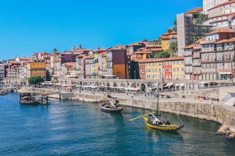

Meilleure période
Avril à juin ou septembre pour profiter d’une météo douce.
Portugal · 4 jours
Des façades colorées d’Alfama aux rives lumineuses du Tage, découvre une ville généreuse, vivante et délicieusement dépaysante.
Voir l’itinéraire
L’itinéraire
Un programme équilibré entre quartiers historiques, bonnes adresses et points de vue inoubliables.
Se perdre dans les ruelles, écouter le fado et admirer le coucher de soleil depuis Portas do Sol.
Découvrir la tour de Belém, le monastère des Hiéronymites et goûter les célèbres pastéis.
Une journée hors de la ville entre palais romantiques, jardins luxuriants et paysages étonnants.
Flâner entre les places élégantes, les librairies et les petites boutiques avant le départ.
Avril à juin ou septembre pour profiter d’une météo douce.
À pied, en tramway et en métro avec la carte Viva Viagem.
Pastéis de nata, bacalhau, sardines grillées et ginjinha.